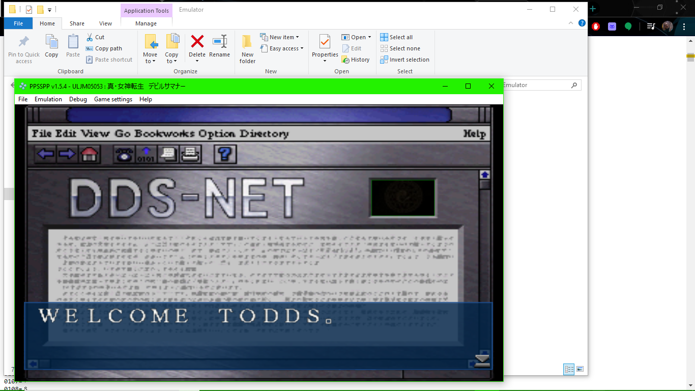

I would like to create a chrome extension this year for Advanced Coding. My concept is this: a chrome extension that allows smaller horror hosts to have a way to sync up their commentary with a movie without having to buy the rights. The idea for this was inspired by the early days of Rifftrax. Rifftrax is the successor to MST3K, run by the original cast. Their business model was you would only buy an audio track of the commentary. You would buy the audio and get your own copy of the movie, and then sync them up using guidance on the audio track. This way they could riff whatever movie they want without worrying about obtaining the rights. Now they have enough money to afford to license movies, but this early business model always stuck with me.

Horror hosts have been on decline in recent years, for similar reasons. With cable dying, these hosts don't really have a home. Only the truly big ones have been successful. Using the Rifftrax model, I have at least a small scale solution. I will create a chrome extension that syncs up a youtube video (containing the hosts commentary), and a streamed copy of the movie, pausing and switching between them to play the commentary at the proper times.
The extension would read data off and access both youtube and a streaming site (I would probably start off using a free site to make testing easier, such as Tubi). On the streaming site it would read the timecode, and would be able to play and pause. On youtube, it would read the timecode and play and pause, but also would read data in the description. The youtuber would put timecodes in their description formatted a certain way: starting with the timecode of their video, followed by the time code for the movie (with brackets around it or something). The extension would also be able to switch tabs. The viewer would go to the youtube page, and then copy and paste the link to the movie. The video would start, and after it reached the first timecode stop it would open the film tab and play the movie. After it hits another timecode in the video description the film would stop and switch back to the youtube video. Back and forth.

Though this will be difficult, it definitely is possible. There are chrome extensions which pause and play videos to sync up two viewers, and there are chrome extensions which can switch tabs. Whether I will be able to do it is a maybe, obviously, but I think I can learn a lot about chrome extensions by doing this, which will be interesting.
I started work on the extension, but it's going... poorly. I think I'm a bit out of my element. I don't know Javascript, HTML, or just web design stuff very well. The very basics of making an extension elude me! I found some tutorials, but I had trouble finding any that go over the basics that well. And making the Javascript uses a lot of commands I just don't have any experience with. It's been pretty frustrating. Right now I'm trying to make it so you can input a link into the extension, and when you click Submit it takes you to that link in a new tab. The form to submit the link shows up in the HTML for the extension, but I have no idea how to get that information to the javascript or even how to get the Javascript to trigger at all. This should be the easy part but I have no idea how to do it. I kind of just feel like I'm flailing in the dark. I've also had a lot of work recently, so it's been hard to keep up on such an open ended project. I kind of want something a bit more structured. I've started doing some Unity tutorials on their website, and they've been really good and helpful so far. Very structured, which is good for me right now. It would be cool to make a game in Unity, and I do have some ideas...
So, I switched to learning Unity and I'm really happy I did. I've been enjoying it so much I've decided to change my bridge project to be based in it. I've been doing the Unity Learn tutorials on their site, and they've been very helpful. I've been doing the fundementals track, and finished most of it. The only thing I couldn't do it upload my 2D project to finish it because something was wrong with the publishing add on to Unity. I think I have a good grasp of the basics. I was a little confused, but after doing the scripting tutorial I really got and the potential of unity! I've already started work on my eventual bridge project with coding movement. I might have to scrap all my work cause I'm probably doing it in a weird and suboptimal way, but it's been fun! And it works decently well. What I now need to learn is more about scripting (mostly the normal and optimal way to do things, and about how best to use events), and how to import models and animations from Blender (a 3d modeling and animation software) and how to use them. I want to learn how to trigger animations, because that seems pretty important. Either way, really liking what I've learned so far, and have found it all very interesting.
I've started doing the next steps for my project this week, and I have a pretty good path forward now. My prototype works okay, but I'm having trouble with getting objects to interact with eachother. Basically, I need the player to grab something within reach, but if there are multiple things in reach, it just does all of them. I think I can use an event to fix this. Events are global, and can tell every object to do something. I think I could use these to make it choose one object (the closest) and ignore the rest. I've 3D modeled an arm in Blender (a free 3D modeling software), and I'm really happy with how it came out. I still need to rig it (add bones to it so I can animate it). I also need to texture it. Then, I'll make a hand hold model and import both of these into Unity, and make it play a grabbing animation when the player grabs hold of a handhold. Still, I have a clear path forward and I'm really happy with how the 3D modeling went.
p>.png)
For the first half of this semester, I attempted to make a chrome extension that would basically sync up a youtube video and a film on a streaming service. Sadly, this didn't work out. I thought the project seemed reasonable, but Chrome extensions are quite complex and not the type of programming I'm used to. It was very quickly overwhelming and I didn't really know where to start. I kept trying to do research but honestly I couldn't get it to do anything. It was very frustrating and I felt completely out of my depth. Because of this, I decided to switch projects to a bigger Unity project, which has ended up becoming my Bridge project. I went through all of the fundementals of Unity tutorials on Unity's official project, and starting creating a zero gravity movement system using Unity for my final project (which will be a game about exploring an abandoned spaceship). Right now you can kick of of walls to get momentum, and grab on to handle bars to stop. It's a bit glitchy because I need to figure out to make it use only the closest bar/wall, and not all of them, but it still works for right now. I've been using scripts written in C# to allow for character control and to add forces to the player object. I've had to rewrite these scripts a lot because I'll do something one way, it'll work, and then realize that I did it in a way that messes up the next step, so I go back and to the first step again, do the second step, realizes it messsed up the third step, ect, ect. As I get more used to Unity and how things are done this will happen less. Unity automatically has collision and physics built in, which you can influence with scripts. It also has "Events" which are global scripts used to call functions in individual scripts. I haven't used those yet but I think it might solve my "every object tries to react at once" problem. Right now I am 3D modeling an arm and a handlebar to add animations to my game. This is going well, I am almost done the arm. The project will involve a lot of 3D modeling, so it's good I'm starting now. I'm a little worried about the animating part, but because to properly interact with the game you need that visual feedback I need to get it working if I'm going to truly refine the movement system before moving on.
For my advanced coding project I have been attempting to translate the game Shin Megami Tensei Devil Summoner for the PSP using a completely translated script and a ROM (basically a rip) of the game. While some people had translated the game completely, they had no hacking experience to actually implement their translation into the game proper. This is what I have been trying to do since the start of the school year.
The basic idea of ROM hacking is taking a file of a game and editing the hex in order to change the game. Editing the hex is necessary since the hackers do not have the source code of the game, just the finished product. The easiest form of ROM hacking is text editing. By simply replacing the hex to change each letter, the text in a game can be changed. This is also the most useful kind of hacking, since it can be used to translate games that remain untranslated by their developers. A famous example is Mother 3. This famous sequel to earthbound for the GBA was never released outside of Japan, despite the popularity of the series. Fans took it upon themselves to translate this game, and through ROM hacking, have made a version as good as any official translated release.

Through a bit of research, I figured out the first step of ROM hacking for a translation is to make a table file. The basic idea of this is that each letter in a ROM has a value. For example, in plain text, A = 1, then after A comes B, so B = 2. The only problem is, A usually isn’t 1. A might be 28. But, the order is the same. If A = 28, B must equal 29. To make a table for a ROM hack, the hacker would first find the file in which the text of the game is stored. Then use relative search to find a word they know is in the game. Take the word “cat”. C(3) A(1) T(20). In terms of numbers, the second number must be 2 less than the first, and the third 19 more than the second number. If you put “cat” into a relative search program, it would recognize 15 13 32 as “cat”. 13 is 2 less than 15, and 32 = 13 + 19. The longer sting you use, the more likely the match you would find it correct. After you find out the value of one letter, you know the values of the rest of the alphabet. For example, if C is 15 than D must be 16. If you make a table file listing all the letters and their equivalents, you can put that into a program and it can interpret the hex into readable text.
![]()
This is for english, but for Japanese it’s similar, since their phonetic characters also have a set order or “alphabet”. There are some outliers with the non-phonetic characters called “Kanji”, but those can be added to the table as well. My main problem is, I cannot find which file in the game contains the text. The game is relatively advanced compared to older games. An NES game, for example, is one 1 file. My game, however is hundreds of files, and I cannot seem to find which file the text is stored in. After some digging, I found out that someone actually has. I am not the first person to attempt to hack this game. They gave up, however, because of the translated script being poorly formatted (it only lists the english, and not the Japanese counterpart). I have found their table file and a dump of the text of the game they made, but I still cannot file which file they used to make this. I have also had some problems using a relative search tool called Monkey Moore, but I did manage to get it to work with an English NES file, so I think the problem was either I was looking in the wrong files, or I was formatting my Japenese test stings incorrectly. It’s hard to tell. Even with the table file, I cannot for the life of me figure out where the text is stored. If I did, however, I would use some sort of hex editor or injector program to replace the Japanese text with English text. I could use the ingame English font, but it’s quite large and only has uppercase letters. Ideally I would hack into a new font, but I would have to research how to do that (though it has been done on the same type of ROM I’m hacking, specifically Steins Gate before is was officially translated). I know hacking english into this game is possible, the person who worked on it before me uploaded some screenshots contained hacked in English text (albeit with the built in English font). My biggest hurdle right now is just finding where the text actually is. If I can actually do that I can finally start actually making some real tangible progress. To be fair, I have learned a lot about ROM hacking and have made a lot of progress from the beginning where I knew practically nothing. My real goal now is to actually have something to show for all that I’ve learned.
I've been working at this for awhile now, and made some more progress. Unsuprisingly, I've also hit a new roadblock. I tried searching directly for the hex value of a letter instead of using a table search tool like Monkey-Moore or Madedit. This worked, and I found a string of letters I knew were in the game. Perfect! Now I just have to run and it see what it looks like in game, right? Nope. For some reason, the game won't run again if it's decompressed. If I extract the files from the .iso and try to run them, the game never starts. Same thing happens even if I repack them into an iso again. It isn't the edits I made either, if I unpack the game and then repack it again without editing it, the same error occurs. I also tried using a program that can edit iso files without decompressing them, but again I had the same issue. It seems if the file is tampered with at all, it won't run. This could be some sort of copy protection, but I'm not sure. I'm also not sure how the person who hacked this rom before me got it to work. I have a few ideas. First, someone has made a successful translation hack of another game from the same company (Atlus) as this game. If I can see what they did in their hack, maybe I can fix it. I... Wait I think I just figured it out I'll be right back.
Okay fix I thought of I just misremembered but I'm gonna try a few things be right back.

After this, I translated a whole line of dialogue

I translated that line by going in a manually editing the text of each letter with a table to tell me what hex is what letter. This is very tedious and slow, and translating the whole game like this would take me a very very long time. The next step, if I continue, would be a text extraction program like cartographer to extract the text. I could then edit the text file without having to worry about the hex, and then use the same program to insert the hex back in, without having to manually edit each letter myself. But, I finally got English text to display! Horray! It took a long time, but I sure learned a lot about hex editing and files and download SO many useless programs. I had a great time on this project, and hopefully I'll find the time to continue it on my own :).